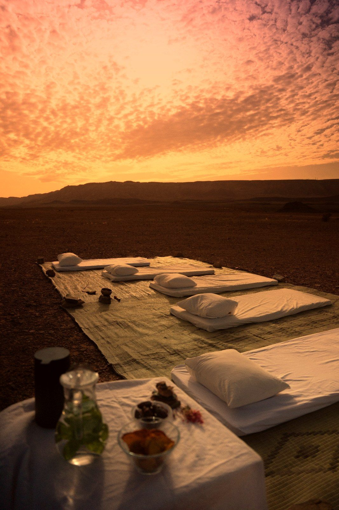

נשימה מעגלית
נשימה רציפה, בלי עצירות בין השאיפה לנשיפה. היא מרככת את המתח בגוף ומאפשרת למה שנשמר בפנים לעלות ולהשתחרר.
לתת שקט לחלחל פנימה
סדנאות לזוגות וקבוצות קטנות
שעה וחצי של שקט, שחרור והתרחבות
נשימה רציפה, בלי עצירה בין השאיפה לנשיפה
מהי נשימה מעגלית
נשימה מעגלית היא כלי עדין ועוצמתי להרפיה עמוקה. דרך נשימה רציפה הגוף משחרר מתחים עומסים ורגשות שהצטברו בו, ומאפשר לאנרגיה חדשה לזרום בגוף ובתודעה.
הנשימה היא מקור החיים.
והיא כמו מראה למצבנו הפנימי.
היא מגיבה למה שאנחנו חווים:
בתקופות של עומס או מתח היא נוטה להיות קצרה ושטחית,
וכשאנחנו מרגישים בטוחים ונינוחים – היא יכולה להיות עמוקה, רחבה וחופשית יותר.
לאורך החיים אנחנו חווים רגעים של פחד, כאב, מתח או חוסר ביטחון שבהם משהו בנו מתכווץ. לעיתים עצרנו את הנשימה או צמצמנו אותה כדי להתמודד, ועם הזמן הכיווץ הזה הפך להרגל שאנחנו כבר לא שמים לב אליו.
נשימה מעגלית מאפשרת לפגוש מחדש את התחושות והרגשות שלא קיבלו מקום, להסכים להרגיש אותם כאן ועכשיו, ולתת להם לנוע ולהשתחרר. מתוך השחרור הזה עולה קלילות ושמחה טבעית – לא משהו חדש שצריך להשיג, אלא משהו שכבר קיים בנו ומחכה שיתנו לו מקום.
אנשים משתפים
הגיעה עם חברהבאופן אישי עברתי כמה סדנאות מכל מיני סוגים לטובת שחרור רגשות תקועים, אבל לעולם, באף סדנה, לא חוויתי כזה שחרור וכזה רוגע שהמשיך עוד כמה ימים אחרי.
סדנה משפחתיתהיינו ארבעה מאותה משפחה, הורים וילדים בגירים. כל אחד מאיתנו חווה חוויה אישית עמוקה ומשמעותית. אור ליווה את המסע שלנו ברגישות ובתבונה, והרגשנו שהוא לגמרי מכוון אלינו כפרטים וכמשפחה.
סדנה זוגיתהגענו בתור זוג לסדנא. קודם כל אור איש מקסים ונעים, ככה שמהתחלה הרגשנו רוגע ונוחות. החוויה הייתה מיוחדת, עמוקה ומלמדת, על עצמנו בתור יחידים וכזוג.
באתי עם חששות וציפיות גדולות לסדנת ריברסינג ראשונה שלי אי פעם. כבר ברגעים הראשונים הרגשתי בטוחה. אור הצליח לראות כל אחד ואחת באופן פרטני וברגישות מדויקת, והנוף המדברי היה הבונוס שבסוף.
בסדנה השנייה עם אור, במכתש, חוויתי כיצד הנשימה המעגלית מגיעה אל שכבות עמוקות ומאפשרת להן להיחשף. זו הייתה חוויה של שחרור, בהירות והתחברות מחודשת.
לא ידעתי כלל על הנשימה המעגלית ולא יכולתי לבקש מנחה מדהים וטוב יותר מאור. הוא הנחה אותי ואת שתי חברותיי בחוכמה וברגישות ואיפשר לתהליכים משמעותיים כל כך לקרות.
הגעתי עם מחסום רגשי לא פתור ואנרגיות נמוכות, ויצאתי אדם חדש. דרך הנשימות הצלחתי להביע את הרגשות הפחות מובעים ביום יום ולהבין את מקור הכעס והכאב שלי.
סדנה זוגיתהגענו למכתש, אני והבת זוג שלי. אור הוביל אותנו במסע הנפלא הזה ברגישות והקשבה עדינה, עם הנחייה שממש עזרה לנו להרפות ולשחרר וגם לפגוש.
בעזרת ההנחיה והדיוק של אור הצלחתי להביע רגשות כפי שאף פעם לא הבעתי. התחושה שאחרי היא נקייה ונינוחה, באמת הצלחתי לשחרר שם משהו תקוע.
זה היה משחרר ומרגיע ובו זמנית מסע למקומות מיוחדים. הסדנה קורית מול הנוף היפה בעולם, וההנחיה של אור מעולה ומדויקת.
היתה לי סדנה מדהימה. המיקום, המזרון, הסדינים, התה וכל מה שמסביב היה מדויק, נקי ונעים. הרגשתי נוח לבכות, לצעוק. ניקיון לנפש ברמה גבוהה.
אור, כמו השם שלך, אתה כזה אור גדול. לעבור ריברסינג במדבר, מסביבך מכתש רמון, מעליך שמים. זו חוויה אחרת לגמרי. תודה על מי שאתה.
מטפל קשוב וצנוע, עם רגישות שיא, מאפשר מרחב בטוח לריפוי עמוק ואמיתי.
בתוך אווירת המדבר הקסומה, הוא הצליח ליצור עבורנו מרחב בטוח, נעים ומעמיק. תרגולי הנשימה בהנחייתו אפשרו לנו להתחבר פנימה, לשחרר ולהתמלא מחדש. הסדנה הזו תלך איתי הלאה.
אור היה רגיש ונעים, יצר סביבה נוחה ומאפשרת ודאג לכל צורך שעלה בסשן. השילוב של החוויה שהעביר עם המדבר המקיף מכל כיוון היה כמו מגלשה לתוך תחושות וזכרונות.
שכחתי כבר מה זה אומר להרגיש ולחוות את הרגשות והתחושות. תודה שפתחת לי פתח.
מי שרוצה להתקרב לכל מיני רגשות מודחקים, זה המקום לפתוח כל מיני מקומות בלב שלא מקבלים מקום מטבע החיים המהירים שאנחנו חיים בהם.
היתה חוויה מאוד חזקה ורגשית. דרך הנשימות עברנו מסע עמוק לשחרור ופורקן. מרגיש שיצאתי עם כלי חדש ביד.
באתי לסשן עם אור בלי לצפות כל כך מזה ויצאתי אחרת לגמרי. אין לי מילים לתאר את הטוב שזה גרם לי.
אור בחור מקסים, הסדנה הייתה חווייתית ומעולה. דאג להכל והיה הכי מזמין וכיפי שבעולם. ממליץ בחום.
תודה אור על חוויה משמעותית, נוגעת עמוק ומשחררת. הליווי העדין והרגיש שלך בסטינג המדהים הזה אפשר המון.
ממליצה ממש על סשן עם אור, נשמה רגישה ומדויקת שיודע להחזיק מרחב.
חוויה משחררת, עוצמתית וקסומה. ממליצה מאוד.
חוויה מדהימה. אור מנחה ברמה הכי גבוהה, שווה כל שקל.
בחור מדהים, ונעים. חוויה מטורפת.
מי אני
אור רבינוביץ, מנחה סדנאות גוף-נפש ומלווה תהליכים אישיים וקבוצתיים. גר במצפה רמון, נשוי למירי ואבא טרי לטל המתוק.
מתוך מסע חיים שכלל התמודדות עם דיכאון וחרדה גיליתי את הריפוי שיש בנשימה ובחיבור לרגשות. חווית החיים האישית שלי הובילה אותי לחקור וללמוד כלים שעוזרים לפגוש ברכות וחמלה את האנושיות שבנו, במטרה לחיות חיים מלאים ומחוברים יותר.
מרחב בטוח להיות מי שאתם
מה עובד שם
השילוב של השקט והמרחב של המכתש יחד תרגילי נשימה מעגלית והבעה רגשית
נשימה רציפה, בלי עצירות בין השאיפה לנשיפה. היא מרככת את המתח בגוף ומאפשרת למה שנשמר בפנים לעלות ולהשתחרר.
מרחב חופשי לשחרר דרך קול ותנועה רגשות כמו כעס, כאב, פחד שמחה ואהבה שהודחקו או נשכחו.
אני נותן דגשים לפי הצורך
לכל רגש תנועה וקול משלו
השקט, המרחב והאור של המכתש מחזיקים את כל התהליך, ועוזרים לגוף להרפות ולהיפתח.
מה קורה בסדנה
כדי שהמעבר מהעומס של היום יום לנשימה יהיה רך, אנחנו מתחילים את הסדנה לאט, ונותנים לגוף זמן לנחות ולהכנס לקצב של המכתש
מגיעים למיקום שקט ומדהים, כשהמכתש מקיף אותנו מכל עבר. מחכים לכם מחצלות, מזרונים וכיבוד קל.
הסבר קצר על הסדנה ועל מה שיהיה בה.
מדיטציה של קרקוע והרפיה. מניחים לעולם החיצוני, מתחברים פנימה, ושמים כוונה למה שרוצים לפגוש ולשחרר.
תרגילי נשימה שונים שיעזרו לנו לנשום בפחות מאמץ.
הקסם מתחיל. דרך הנשימה צוללים פנימה, ואני איתכם, מנחה, מלווה ותומך בכל צורך שעולה.
רגע של רכות כלפי עצמנו. נותנים לגוף לנוח, ומרגישים את מה שנפתח ושהשתחרר.
לאט לאט חוזרים מהביקור בעולם הפנימי, פותחים עיניים לשקט של המכתש, לשקיעה שיורדת, לשמש שעולה, או לכוכבים בשמיים. מי שרוצה משתף, ונותנים לחוויה להתיישב.

לנשום ולשחרר את מה שמעכב חיים
עומק החיים כעומק הנשימה
האפשרויות
כל סדנה נבנית סביב מי שמגיע, וכל משתתף חווה אותה באופן אישי לגמרי, גם כשנושמים יחד.
לזוגות שרוצים חוויה משותפת שנשארת איתם גם אחרי.
לתאם סדנה זוגיתעד 7 משתתפים
למשפחות ולקבוצות קטנות של חברים קרובים.
לתאם סדנה קבוצתיתאפשר להתעדכן על סדנאות פתוחות בקבוצת הוואטסאפ.
להצטרפות לקבוצת העדכוניםבמצפה רמון
להעמיק בתהליך אישי מתמשך, במפגשים בקליניקה במצפה רמון.
לתאם סשן אישימתאים גם לציוני דרך כמו יום נישואין, יום הולדת עגול, או סתם החלטה לפתוח פרק חדש.
שאלות ששואלים אותי
כן. רוב הסדנאות שלי הן פרטיות (זוגיות או קבוצתיות), אבל אחת לתקופה יש סדנה פתוחה שאפשר להצטרף אליה. יש קבוצת וואטסאפ שקטה שבה אני מעדכן על תאריכים שנפתחים. אפשר לשלוח לי הודעה ואשלח קישור להצטרפות.
כן. ואפשר גם לבוא לסשן אישי בקליניקה אצלי בבית במצפה רמון.
כן, רק אם זה מתאים, ואני תמיד שואל מראש. בחוויה האישית שלי כמטופל, מגע בסשן נשימה ממש תומך בי. הוא גם נותן ביטחון, וגם מאפשר לשחרר את מה שמבקש להשתחרר.
כן לגמרי. בכי הוא הדרך הטבעית של הגוף לפרוק עומס וכאב שהצטברו. ואפשר להרגיש הכל: כעס, כאב או פחד. ואחרי שנותנים לרגשות האלה מקום, מגיעים גם צחוק, הודיה, אהבה ושקט עמוק.
זה באמת יכול להיות עוצמתי, אבל לגמרי יש מודעות. זה אחד היתרונות הבולטים בנשימה מעגלית: בניגוד לחומרים משני תודעה, כאן יש תמיד שליטה, ואפשר להפסיק מתי שרוצים. אם מרגישים שזה עוצמתי מדי, פשוט חוזרים לנשימה טבעית.
הרבה פעמים לקראת הסיום נכנסים לכמה דקות לשינה עמוקה ומתוקה, מה שנקרא שינה ערה. במצב הזה המודעות קצת משתנה, ומבינים את זה לעומק רק בדיעבד. אלה רגעים מתוקים שעושים ממש ריסטארט למערכת.
יש באוויר אנרגיה רכה של שחרור. של רפואה.
בואו נדבר
ממלאים את הפרטים, נפתחת שיחת וואטסאפ עם ההודעה מוכנה, ואור חוזר אליכם.